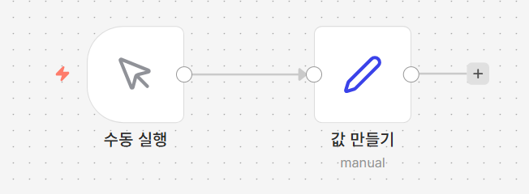
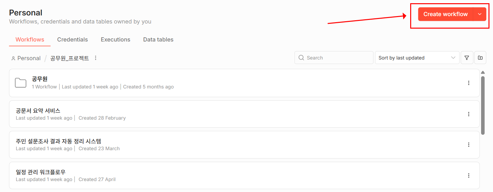
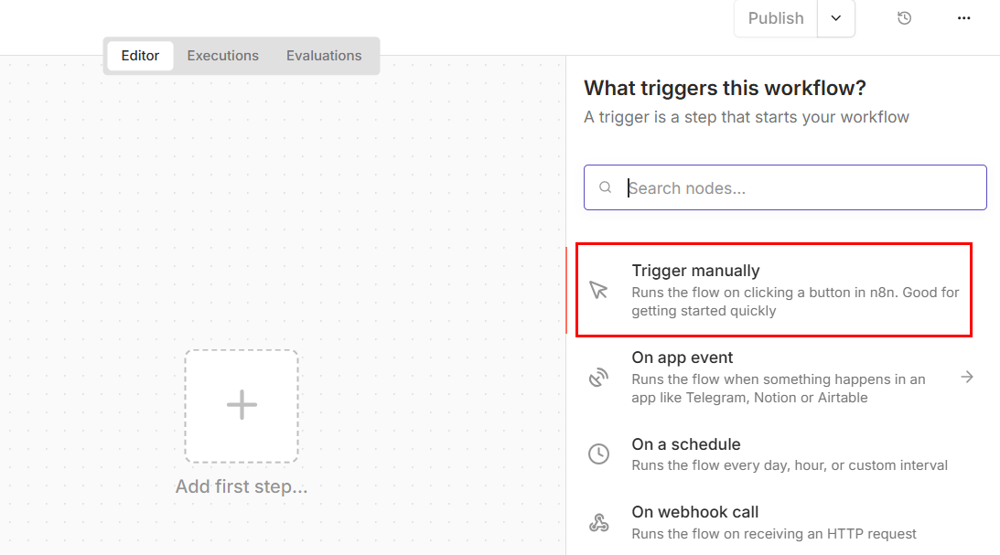
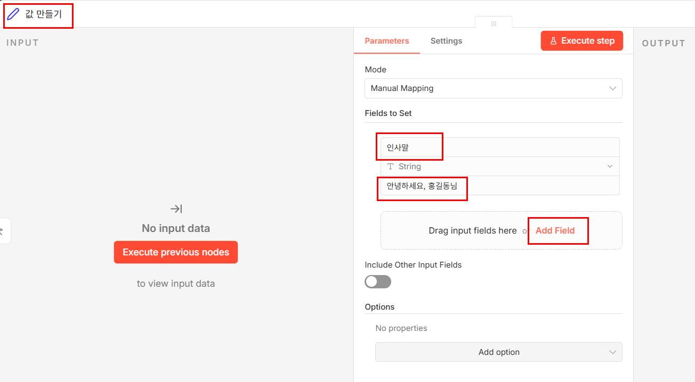

업무 자동화 이야기를 들으면 대개 "그래서 뭘, 어디서부터 하라는 거지?"에서
막힙니다. 무엇을 자동화할지는 알겠는데 첫 단추를 어디에 끼우는지 모르는
상태입니다.
n8n의 답은 의외로 단순합니다. 모든 자동화는 "언제 시작할지"와
"무엇을 할지" 두 조각으로만 이뤄집니다. 앞의 것을 트리거,
뒤의 것을 노드라고 부릅니다. 아무리 복잡해 보이는 자동화도 이 둘의
조합일 뿐입니다.
솔직히 말하면 이번 시간에 만드는 것은 아무 쓸모가 없습니다. 버튼을
누르면 글자 한 줄이 만들어질 뿐입니다. 그런데 8강까지 가서 완성되는 민원 접수
시스템도 구조는 똑같습니다 — 트리거 하나에 노드 여럿. 지금 만드는 것은
그 뼈대이고, 뼈대를 손에 익히는 것이 이번 시간의 목적입니다.
1일차는 8개를 만드는 것이 아닙니다
워크플로우 하나를 여덟 번에 걸쳐 키웁니다. 지금 만드는 이 워크플로우에
매 시간 노드를 하나씩 얹어 나가면, 8강 끝에는 민원을 접수해 시트에 기록하고
메일을 보내고 캘린더에 마감을 잡고 AI가 안내문까지 쓰는 시스템이 되어 있습니다.
이번 시간에 만들 것
실행 버튼을 누르면 인사말이라는 값이 만들어지는,
가장 단순한 워크플로우를 만듭니다.
[그림 1-1] 완성된 모습 — 수동 실행 → 값 만들기 두 노드

두 노드 이름은 아래 따라하기에서 직접 바꿉니다. 노드 이름 아래 흐리게
적힌 manual은 값 만들기 노드가 값을
손으로 채워 넣는 방식(Manual Mapping)이라는 표시이니 신경 쓰지 않아도 됩니다.
새 워크플로우 만들기
n8n 화면 오른쪽 위 주황색 Create workflow 버튼을 누릅니다.
왼쪽 메뉴에서 Personal(또는
Overview)을 눌러 나오는 워크플로우 목록 화면에서 누르면
됩니다. 화면 위쪽에 Workflows·
Credentials·Executions·
Data tables 탭이 있고,
Workflows 탭이 선택된 상태입니다. 지금 어떤 폴더 안에
들어와 있으면 그 폴더 안에 만들어집니다.
[그림 1-2] 워크플로우 목록 화면 오른쪽 위의 Create workflow 버튼

트리거 추가하기
빈 캔버스 가운데 Add first step…을 누르면 오른쪽에
What triggers this workflow? 패널이 열립니다.
목록 맨 위의 Trigger manually를 고릅니다.
직접 실행 버튼을 눌러 시작하는 트리거입니다. 아래에 있는
On a schedule(정해진 시간마다)나 On webhook call(외부 요청이 올 때)은
나중 시간에 씁니다. 목록은 Trigger manually →
On app event → On a schedule →
On webhook call 순서로 놓여 있습니다.
[그림 1-3] 트리거 고르기 패널 — 맨 위 Trigger manually

트리거 이름 바꾸기
캔버스에 놓인 트리거 노드의 이름은 처음에
When clicking 'Execute workflow'처럼 길게 되어 있습니다.
노드를 열어 왼쪽 위 제목을 더블클릭하고 수동 실행으로
바꿉니다.
[그림 1-1]의 왼쪽 노드가 이 이름으로 바뀐 모습입니다. 앞으로
모든 강의에서 이 노드를 수동 실행이라고 부릅니다.
Set 노드 붙이기
방금 만든 노드 오른쪽 +를 누르고 Edit Fields (Set)를 고릅니다.
필드 추가하기
노드를 열면 Mode가 Manual Mapping으로 되어 있고
그 아래 Fields to Set 영역이 보입니다. 여기에 이름과 값을 입력할 빈 줄이
보이지 않는다면 Add Field를 눌러 줄을 하나 만듭니다.
이미 빈 줄이 하나 보인다면 그 줄을 그대로 씁니다.
Add Field는 필드 줄 바로 아래
Drag input fields here or 문구 옆에 있습니다.
값 채우기
위 칸(name)에 인사말,
아래 칸(value)에 안녕하세요, 홍길동님을 넣습니다.
두 칸 사이의 자료형은 String 그대로 둡니다.
Include Other Input Fields 스위치도 꺼진 채로 둡니다.
[그림 1-4] 이름과 값을 채운 모습

왼쪽 INPUT 칸이 No input data로 비어 있고
빨간 Execute previous nodes 버튼이 보이는 것은 정상입니다.
아직 한 번도 실행하지 않아서 앞 노드가 넘겨준 데이터가 없을 뿐입니다.아래쪽 Options에
No properties라고 나오는 것도 정상입니다. 이번 강의에서는
추가 설정을 쓰지 않습니다.
노드 이름 바꾸기
노드 패널 왼쪽 위의 노드 제목을 더블클릭하면 이름을 고칠 수 있습니다.
값 만들기로 바꿉니다.
노드가 많아지면 이름이 곧 설명서가 됩니다.
[그림 1-4]는 이 이름 바꾸기까지 마친 뒤의 모습입니다 — 왼쪽 위에
값 만들기라고 적혀 있습니다.
실행하고 확인하기
아래쪽 Execute workflow를 누릅니다.
노드마다 초록 체크가 뜨고, 값 만들기를 누르면 오른쪽에
인사말: 안녕하세요, 홍길동님이 보이면 성공입니다.
안 될 때
실행 버튼이 안 보입니다 — 트리거 노드가 없으면 실행할 수 없습니다. 2단계를 다시 확인하세요.
두 노드가 선으로 이어지지 않았습니다 — 노드 오른쪽 동그라미를 끌어다 다음 노드 왼쪽에 놓으면 연결됩니다.
필드 이름을 입력할 칸이 없습니다 — 아직 필드 줄이 만들어지지 않았습니다.
Add Field를 눌러 빈 줄을 먼저 만드세요.
값이 비어 보입니다 — 이름 칸(name)과 값 칸(value)을
바꿔 넣지 않았는지 확인하세요. 위가 이름, 아래가 값입니다.